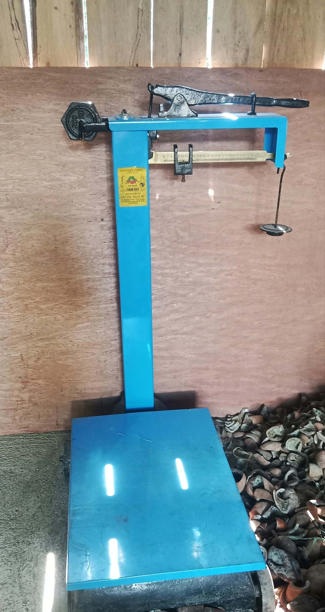
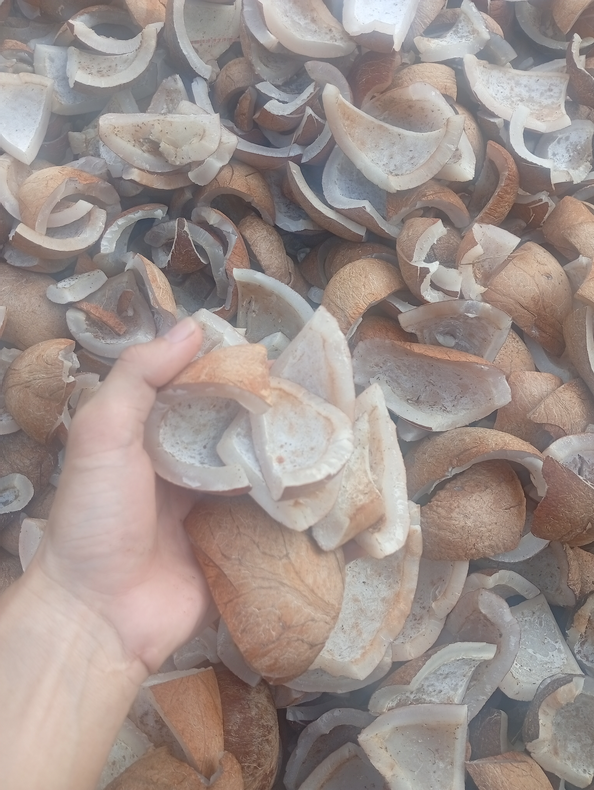
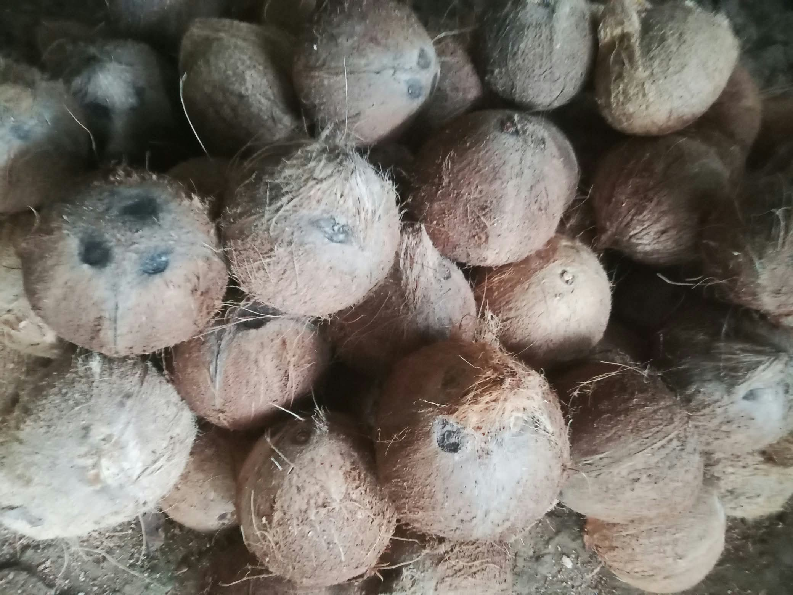
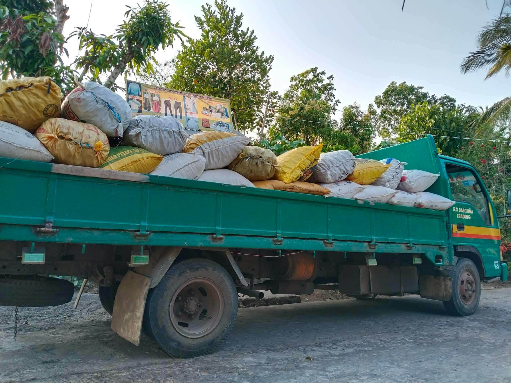
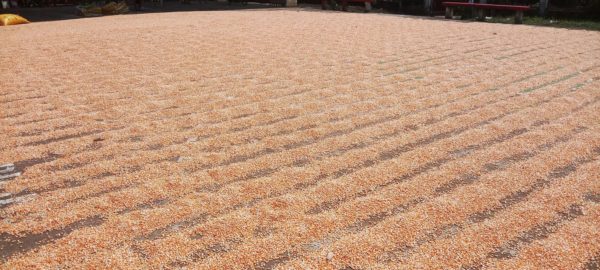
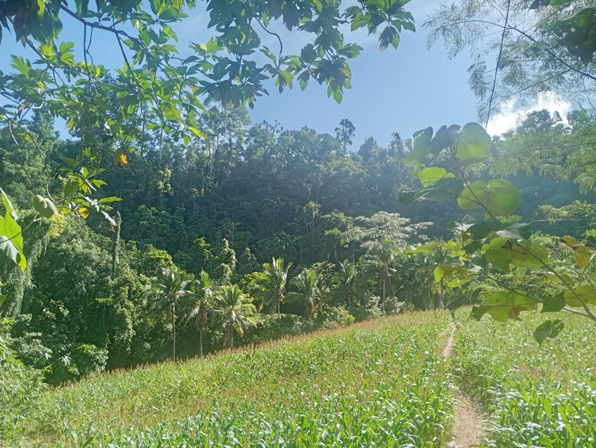
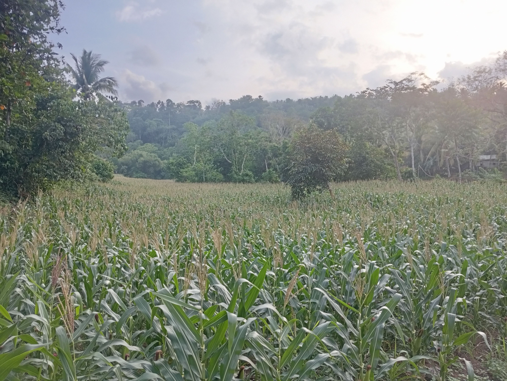
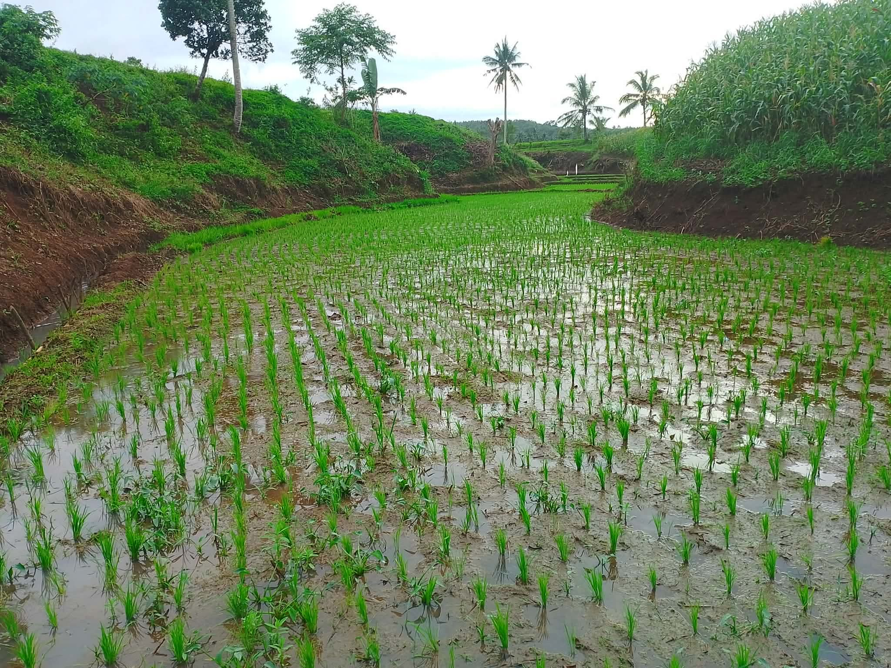
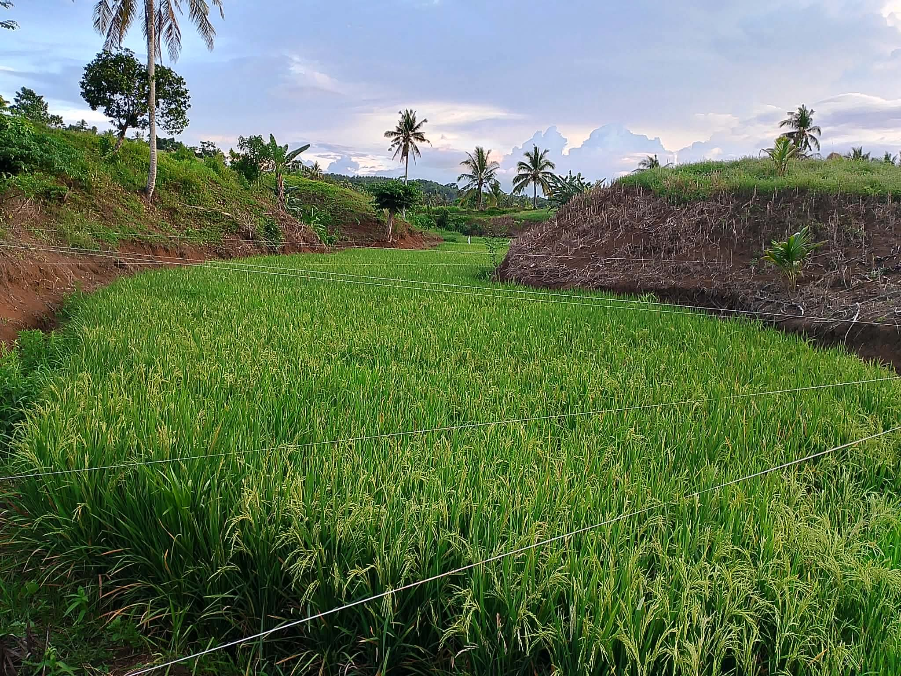
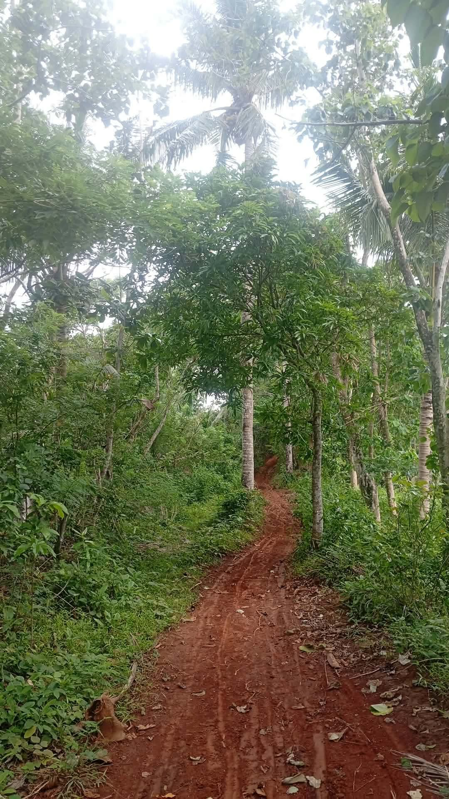

Samahan ng Masisinop
Sustainable Livelihood Program (SLPA) Aniog

Sustainable Livelihood Program (SLPA) Aniog
Sustainable Livelihood Program Association of Aniog (SLPA) Samahan ng Masisinop is a community that deserves a system designed to make business easier. We help local producers in Barangay Aniog to track their goods, record sales, and monitor their income effortlessly.













| Manage Your Products | Work Anywhere | Track Your Earnings |
|---|---|---|
| Easily check and update your current stock of agricultural products, supplies and raw materials. | Keep recording your sales even without an internet connection. The system will automatically update your records once you're back online. | Clearly see your starting capital, everyday business expenses, cash flow analytics and total profits through dashboard. |











Explore the farmlands, sloped fields, and primary harvest routes of Barangay Aniog. Here, members of Samahan ng Masisinop SLPA carefully grow fresh coconuts, grains, and root crops. We proudly honor these dedicated local farmers and sellers who power our community every day.
The DSWD Field Office V issued a Certificate of Accreditation recognizing Samahan ng Masisinop SLPA as a Beneficiary Civil Society Organization under the Sustainable Livelihood Program. The accreditation is valid for three years, until September 16, 2028.
Members of the association are preparing their copra for hauling. Sellers can record each load, track their remaining stock and see their income in USWAG, even without an internet connection while the trucks are on the road.
The sloped fields and harvest routes of Barangay Aniog carry coconuts, grains and root crops from the farm to the SLP center. Here is a look at the routes our farmers travel every harvest season.
The SLP Center is where products are weighed, stored and prepared for buyers. Learn how members of Samahan ng Masisinop work together to keep goods moving from the field to the market.
Corn, cassava and sweet potatoes from our local sellers are now listed in the Product Gallery. Buyers from other barangays are welcome to register and message a seller directly.
Sellers can keep recording their sales while offline. The system saves them on the device and updates the records automatically once the internet connection is back.